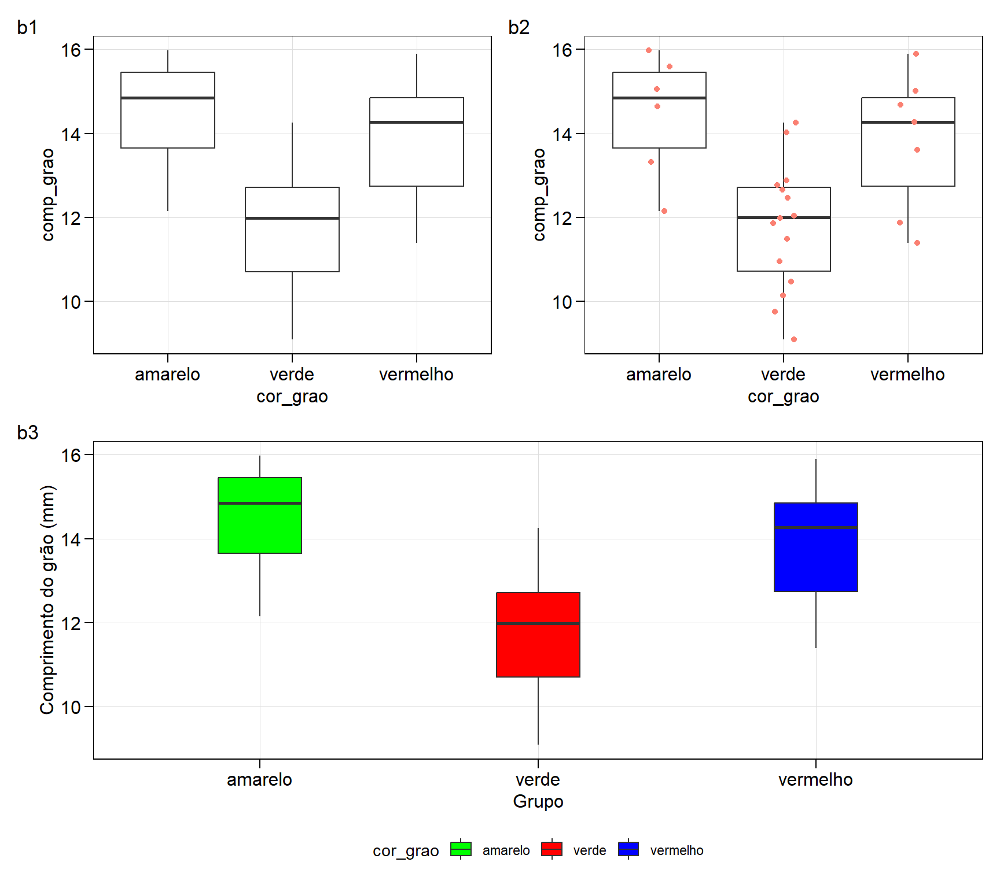
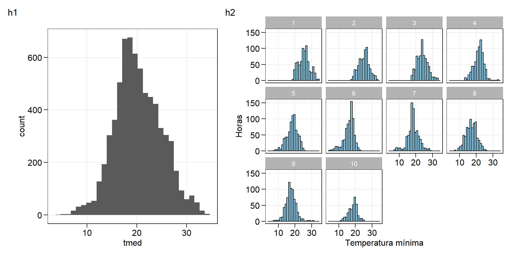

# pacotes para criação de mapas (github)
remotes::install_github("ropensci/rnaturalearthhires")
remotes::install_github("ricardo-bion/ggradar")
remotes::install_github("ricardo-bion/ggradar")
remotes::install_github("ipeaGIT/geobr", subdir = "r-package")5. Visualização de dados
1 Pacotes
Para reprodução destes exemplos, os seguintes pacotes precisam ser instalados do github
Antes de carregar, verifique se o pacote está instalado.
library(tidyverse)
library(metan)
library(rio)
library(ggridges)
library(rnaturalearth)
library(ggradar)
library(lubridate)
library(geobr)2 Dados
2.1 Grãos de café
Os dados contidos na aba graos do arquivo Atividade caracteres qualitativos e quantitativos serão utilizados. Este arquivo contém dados do comprimento e largura de grãos e folhas de café, amostrados na primeira aula de Bioestatística da turma 2022/01. Para carregar estes dados, utilizamos o seguinte comando.
url <- "https://docs.google.com/spreadsheets/d/1JMrkppvv1BdGKVCekzZPsPYCKcgUWjxpuDlWqejc22s/edit#gid=2073179916"
df <-
import(url, dec = ",") |>
as_factor(1:3)
head(df) grupo individuo cor comprimento largura
1 Grupo 1 1 vermelho 13.49 16.61
2 Grupo 1 2 vermelho 11.08 14.23
3 Grupo 1 3 vermelho 13.35 15.93
4 Grupo 1 4 vermelho 9.87 14.10
5 Grupo 1 5 verde 11.61 16.11
6 Grupo 1 6 verde 9.86 13.872.2 Dados da estação meteorológica
url2 <- "https://docs.google.com/spreadsheets/d/1JMrkppvv1BdGKVCekzZPsPYCKcgUWjxpuDlWqejc22s/edit#gid=764890920"
df_estacao <-
import(url2, setclass = "tbl", dec = ",") |>
as_character(1:4) |>
mutate(dia = dmy(dia))
head(df_estacao)# A tibble: 6 × 14
dia d m hora prec tmax tmed tmin urmax urmed urmin dirvent
<date> <chr> <chr> <chr> <dbl> <dbl> <dbl> <dbl> <dbl> <dbl> <dbl> <dbl>
1 2022-01-01 1 1 00:00 0 21.2 20.6 20.2 100 99.5 99.0 0
2 2022-01-01 1 1 01:00 0 20.5 19.8 19.4 100 99.9 99.6 0
3 2022-01-01 1 1 02:00 0 19.7 19.4 19 100 100 99.9 0
4 2022-01-01 1 1 03:00 0 20.0 19.2 18.7 100 100 100 0
5 2022-01-01 1 1 04:00 0 20.5 20.2 19.8 100 100 100 0
6 2022-01-01 1 1 05:00 0 20.7 20.2 19.9 100 100 100 79.8
# … with 2 more variables: velvent <dbl>, rajada <dbl>3 Gráficos
“O gráfico simples trouxe mais informações à mente do analista de dados do que qualquer outro dispositivo.” — John Tukey
3.1 O pacote ggplot2
O ggplot2 é um pacote R para produção de gráficos que diferentemente da maioria dos outros pacotes, apresenta uma profunda gramática baseada no livro The grammar of graphics (Wilkinson 2005)1. Os gráficos originados em ggplot2 são baseados em camadas, e cada gráfico tem três componentes chave: data, os dados de onde o gráfico será criado; aes() (aesthetic mappings), que controla o mapeamento estético e as propriedades visuais do gráfico; e ao menos uma camada que irá descrever como cada observação será renderizada. Camadas são usualmente criadas utilizando uma função geom_().
3.2 Meu primeiro gráfico em ggplot2
A seguir, vamos discutir os aspcetos básicos para a construção de gráficos utilizando o pacote ggplot2. A função arrange_ggplot() do pacote metan foi utilizada aqui para organizar os gráficos em forma de painéis.
3.3 As camadas de um gráfico ggplot2
No ggplot2, os gráficos são construídos camada por camada (ou, layers, em inglês). Neste exemplo, vamos confeccionar um gráfico mostrando a distribuição do comprimento da folha (eixo x) e largura da folha (eixo y).
ggplot(df, aes(comprimento, largura)) +
geom_point()
p1 <-
ggplot(df, aes(x = comprimento, y = largura)) +
geom_point()
p1
Este comando criou um gráfico e armazenou no objeto p1, que será plotado posteriormente. Observe que o primeiro argumento da função é o data frame onde nossos dados foram armazenados. A função aes() descreve como as variáveis são mapeadas (neste caso comprimento no eixo x e largura no eixo y). A função geom_point() definiu que a forma geométrica a ser utilizada é baseada em pontos, gerando, assim, um gráfico de dispersão. Isto é tudo que precisa ser feito para a confecção de um gráfico simples.
3.4 Aesthetics (estética)
“O maior valor de uma imagem é quando ela nos obriga a perceber o que nunca esperamos ver.” — John Tukey
Alterar a estética dos gráficos ggplot2 é uma tarefa relativamente simples. No gráfico anterior, os valores do comprimento e largura foram plotados sem nenhum tipo de mapeamento estético. Digamos que marcadores com diferentes cores para cada nível do fator cor poderia nos ajudar a compreender melhor o padrão presente em nossos dados. Vamos confeccionar este gráfico.
p2 <-
ggplot(df, aes(x = comprimento,
y = largura,
colour = cor)) +
geom_point()
p2
Ao incluirmos colour = cor dentro da função aes, dizemos ao ggplot que os pontos devem ser mapeados esteticamente (neste caso utilizando cores) para cada nível do fator cor presente em nossos dados. Digamos que em vez de utilizar diferentes cores, a cor do grão do café deveria ser representada por diferentes tipos de marcadores (quadrados, triângulo, etc.) Neste caso, o argumento colour = cor é substituído por shape = cor.
p3 <-
ggplot(df, aes(x = comprimento, y = largura, shape = cor, color = cor)) +
geom_point()
# organizar os gráficos
arrange_ggplot(p1, p2, p3,
ncol = 3,
tag_levels = list(c("p1", "p2", "p3")))3.5 Salvar gráficos
A função ggsave() é uma função conveniente para salvar um gráfico. O padrão é salvar a última plotagem exibida, usando o tamanho do dispositivo gráfico atual. Também é possível informar a altura (height) e largura (width). Ele também adivinha o tipo de dispositivo gráfico da extensão. No seguinte exemplo, o gráfico acima é salvo no diretório de trabalho atual com o nome pontos.png, com 5 polegadas de altura e 10 de largura.
ggsave("pontos.png",
height = 5,
width = 10)3.6 Facet (facetas)
Mapeando os diferentes níveis de cor para diferentes cores, incluímos em um único gráfico os dados de todos osgrupos. Mas, e se nosso objetivo fosse realizar um gráfico para cada grupo? O ggplot2 tem uma poderosa ferramenta para isto: as funções facet_. Ao utilizar estas funções, o conjunto de dados é subdividido e um gráfico é construído para cada um destes subconjuntos. Vamos ver como elas podem nos ajudar em nosso problema.
fac1 <-
ggplot(df, aes(x = comprimento,
y = largura,
color = cor)) +
geom_point() +
facet_wrap(~ grupo)
fac1
Neste exemplo, um gráfico completamente diferente do anterior é gerado com apenas uma simples adição: incluímos uma nova função, facet_wrap(~ grupo). Neste caso, informamos que um gráfico deveria ser realizado para cada grupo.
3.7 Theme (temas)
Cada gráfico criado com a função ggplot() tem um tema padrão. Tema, aqui, é toda propriedade relacionada ao aspecto visual do gráfico, que não foi definida na função aes() e que pode ser modificada utilizando a função theme() (veja ?theme). O ggplot2 já conta com alguns temas personalizados para facilitar nosso trabalho. Considerando o exemplo anterior, vamos utilizar a função theme_bw() (preto e branco) e a função theme() para modificar as propriedades visuais do gráfico.
fac2 <-
ggplot(df, aes(x = comprimento, y = largura, color = cor)) +
geom_point() +
facet_wrap(~ grupo) +
theme_light() +
theme(panel.grid.minor = element_blank(), # remove as linhas do corpo do gráfico
# sem bordas entre os painéis
panel.spacing = unit(0, "cm"),
# legenda abaixo do gráfico
legend.position = "bottom",
# modifica o texto dos eixos
axis.text = element_text(size = 12, colour = "black"),
# cor dos marcadores
axis.ticks = element_line(colour = "black"),
# tamanho dos marcadores
axis.ticks.length = unit(.2, "cm"),
#cor da borda
panel.border = element_rect(colour = "black", fill = NA, size = 0.5))+
# título dos eixos
labs(x = "Comprimento do grão (mm)", # título do eixo x
y = "Largura do grão (mm)", # título do eixo y
color = "") # título da legenda
arrange_ggplot(fac1, fac2,
ncol = 1,
tag_levels = list(c("f1", "f2")))Os argumentos inseridos dentro das função theme() modificaram a aparência do nosso gráfico. Inúmeros outros argumentos são disponíveis, fazendo com que os gráficos originados sejam completamente personalizáveis. Digamos que precisamos confeccionar diversos gráficos e gostaríamos de manter o mesmo tema do gráfico acima. Seria exaustivo e desinteressante informar cada vez estes argumentos para cada gráfico, não? Felizmente, outra poderosa ferramenta proporcionada pelo ggplot2 é a possibilidade de confeccionarmos nossos próprios temas. Para isto, vamos executar o seguinte comando para criar um tema personalizado (my_theme()). Este tema pode então ser aplicado como uma camada adicional a cada gráfico que confecionarmos. Para evitar a necessidade da inclusão deste tema em cada gráfico gerado, iremos definir este tema como padrão utilizando a função theme_set().
my_theme <- function () {
theme_light() %+replace% # permite que os valores informados possam ser sobescritos
theme(axis.ticks.length = unit(.2, "cm"),
axis.text = element_text(size = 12, colour = "black"),
axis.title = element_text(size = 12, colour = "black"),
axis.ticks = element_line(colour = "black"),
panel.border = element_rect(colour = "black", fill = NA, size = 0.5),
panel.grid.minor = element_blank())
}
theme_set(my_theme())3.8 Geoms (geometria)
As funções geom_ definem qual forma geométrica será utilizada para a visualização dos dados no gráfico. Até agora, utilizamos a função geom_point()para construir gráficos de dispersão. Basicamente, qualquer outro tipo de gráfico pode ser criado dependendo da função geom_ utilizada. Dentre as diversas disponíveis no pacote ggplot2 as funções geom_ mais utilizadas são:
geom_abline(): para retas definidas por um intercepto e uma inclinação;geom_hline(): para retas horizontais definidas por um intercepty;geom_vline(): para retas verticais definidas por um interceptx;geom_boxplot(): para boxplots;geom_histogram(): para histogramas de frequência;geom_smooth(): ajusta uma função para o conjunto de dados e mostra uma banda de confiança;geom_density(): para densidades;geom_area(): para áreas;geom_bar(): para barras;geom_errorbar()para barras de erro;
Deste ponto em diante, vamos confeccionar alguns exemplos utilizando algumas destas funções (ou combinações destas funções) incluindo argumentos de mapeamento de estética e temas vistos até agora.
3.8.1 Linhas horizontais, verticais e diagonais
Três importantes geometrias são apresentadas a seguir:
geom_hline()adiciona uma linha horizontal definida por um intercepto emygeom_vline()adiciona uma linha vertical definida por um intercepto emx.geom_abline()adiciona uma linha diagonal definida por um intercepto e uma inclinação.
g1 <-
ggplot(df, aes(comprimento, largura)) +
geom_point()
# adiciona linhas horizontais e verticais
g2 <-
g1 +
geom_hline(yintercept = mean(df$largura), color = "blue") +
geom_vline(xintercept = mean(df$comprimento), color = "red")
arrange_ggplot(g1, g2,
ncol = 1,
tag_levels = list(c("g1", "g2")))
3.8.2 Gráficos do tipo boxplot
box1 <-
ggplot(df, aes(grupo, comprimento)) +
geom_boxplot()
box2 <-
ggplot(df, aes(grupo, comprimento)) +
geom_boxplot() +
geom_jitter(width = 0.1, color = "salmon")
box3 <-
ggplot(df, aes(grupo, comprimento, fill = cor)) +
geom_boxplot(width = 0.3) +
labs(x = "Grupo",
y = "Comprimento do grão (mm)") +
theme(legend.position = "bottom") +
scale_fill_manual(values = c("green", "red"))
arrange_ggplot((box1 + box2) / box3,
tag_levels = list(c("b1", "b2", "b3")))
Cinco estatísticas são mostradas neste boxplot. A mediana (linha horizontal), as caixas inferior e superior (primeiro e terceiro quartil (percentis 25 e 75, respectivamente)). A linha vertical superior se estende da caixa até o maior valor, não maior que $1,5 $ (onde IQR é a amplitude interquartílica). A linha vertical inferior se estende da caixa até o menor valor, de no máximo, $1,5 $. Dados além das linhas horizontais podem ser considerados outliers.
3.8.3 Gráficos do tipo histograma
Neste exemplo, utilizaremos os dados de temperatura mínima da estação meteorológica, disponível no data frame df_estacao. O primeiro histograma (p1) mostra os dados gerais desde 01/01/2022. No segundo, um histograma é gerado para cada mês.
h1 <-
ggplot(df_estacao, aes(x = tmed)) +
geom_histogram()
h2 <-
ggplot(df_estacao, aes(x = tmed)) +
geom_histogram(color = "black",
fill = "skyblue") +
facet_wrap(~m) +
labs(x = "Temperatura mínima",
y = "Horas")
arrange_ggplot(h1, h2,
widths = c(1, 1.4),
tag_levels = list(c("h1", "h2")))
No histograma (h2), a linha vermelha representa a estimativa da função de probabilidade normal. Para isto, a escala do eixo y foi mudada de contagem para densidade.
3.8.4 Gráficos de Densidade
Os gráficos de densidade, têm a mesma interpretação que histogramas, no então são esteticamente mais atraente. Os primeiros dois exemplos nada mais são que a versão densidade dos histogramas apresentados anteriormente.
No terceiro exemplo (d3), eu mostro como é possível construir um gráfico de densidade ridges. Gráficos ridges são gráficos de linha parcialmente sobrepostos que criam a impressão de uma cordilheira. Eles podem ser bastante úteis para visualizar mudanças nas distribuições ao longo do tempo ou espaço2.
d1 <-
ggplot(df_estacao, aes(x = tmed)) +
geom_density()
d2 <-
ggplot(df_estacao, aes(x = tmed)) +
geom_density(color = "black",
fill = "skyblue") +
facet_wrap(~m) +
labs(x = "Temperatura média (ºC)",
y = "Horas")
d3 <-
ggplot(df_estacao, aes(x = tmed, y = m, fill = stat(x))) +
geom_density_ridges_gradient() +
scale_fill_viridis_c() +
labs(x = "Temperatura média (ºC)",
y = "Meses do ano",
fill = "Temperatura\nmédia (ºC)")
# agrupa os gráficos
arrange_ggplot((d1 + d2) / d3,
tag_levels = list(c("d1", "d2", "d3")))
3.8.5 Gráficos de linhas
O seguinte exemplo mostra a temperatura mínima, média e máxima ao longo dos dias desde 01/01/2022.
Primeiro, é preciso obter as temperaturas mínimas, máximas e médias de cada dia. Fazemos isso com a função summarise().
clima_max_min <-
df_estacao %>%
group_by(dia) %>%
summarise(max = max(tmax),
min = min(tmin),
mean = mean(tmed),
precip = sum(prec)) %>%
pivot_longer(-dia)
clima_max_min# A tibble: 628 × 3
dia name value
<date> <chr> <dbl>
1 2022-01-01 max 28.7
2 2022-01-01 min 18
3 2022-01-01 mean 24.0
4 2022-01-01 precip 0
5 2022-01-02 max 31.8
6 2022-01-02 min 23.4
7 2022-01-02 mean 27.1
8 2022-01-02 precip 0
9 2022-01-03 max 32.4
10 2022-01-03 min 24.3
# … with 618 more rows# realiza um subset para remover a precipitação
df_temp <-
clima_max_min |>
subset(name != "precip")
# faz o gráfico de linhas
ggplot(df_temp, aes(dia, value, color = name)) +
geom_point() +
geom_line() +
scale_color_manual(values = c("red", "green", "blue"),
labels = c("Temperatura máxima (ºC)",
"Temperatura média (ºC)",
"Temperatura mínima (ºC)"),
guide = "legend") +
scale_x_date(date_breaks = "3 week", # marcação a cada duas semanas
date_labels = "%d/%m/%y") + # formato dd/mm/aa
theme(legend.position = "bottom",
axis.text.x = element_text(angle = 45, vjust = 1, hjust = 1)) +
labs(title = "Temperaturas máximas, médias e mínimas em 2022",
subtitle = "Estação - Fazenda Ressacada",
caption = "Elaboração: Prof. Olivoto",
x = "Dia do ano",
y = "Temperatura (ºC)",
color = NULL) # remove o título da legenda
3.8.6 Gráficos do tipo barra
No seguinte exemplo, os dados do comprimento do grão de café disponíveis em df são utilizados. ::: {.cell layout-align=“center”}
bar1 <-
ggplot(df, aes(x = grupo, y = comprimento)) +
geom_bar(stat = "summary", fun = "mean")
bar2 <-
ggplot(df, aes(x = grupo, y = comprimento, fill = cor)) +
stat_summary(fun = mean,
geom = "bar",
col = "black",
width = 0.8,
position = position_dodge(0.8)) +
stat_summary(fun.data = mean_se,
geom = "errorbar",
width = 0.2,
position = position_dodge(0.8))
arrange_ggplot(bar1, bar2,
widths = c(0.6, 1.2),
tag_levels = list(c("bar1", "bar2")))
:::
A afirmação de que um gráfico ggplot2 é feito em camadas fica mais evidente aqui. No gráfico bar1, as barras representam as médias geral do comprimento para cada grupo. No segundo gráfico, ao usar fill = cor informamos que as barras devem ser coloridas para cada nível do fator cor. A função stat_summary(), é vista pela primeira vez aqui, foi utilizada no segundo gráfico para substituir a função geom_bar(). Com isto, foi possível incluir as médias (fun = mean e geom = "bar), bem como as barras de erro (fun.data = mean_se e geom = "errorbar").
Utilizando a função plot_factbars() do pacote metan, um gráfico semelhante pode ser criado com as funções plot_bars() e plot_factbars()
metan1 <-
plot_bars(df,
x = grupo,
y = comprimento)
metan2 <-
plot_factbars(df, # dados
grupo, cor, # dois fatores
resp = comprimento) # eixo y
arrange_ggplot(metan1, metan2,
widths = c(0.6, 1.2),
tag_levels = list(c("metan1", "metan2")))
3.9 Dados da estação
3.9.1 Gráfico da precipitação e temperatura
df_prec <-
clima_max_min |>
pivot_wider(names_from = "name",
values_from = "value")
ggplot() +
geom_bar(df_prec,
mapping = aes(x = dia, y = precip * 30 / 100),
stat = "identity",
fill = "skyblue") +
geom_line(df_prec,
mapping = aes(x = dia, y = max, colour = "red"),
size = 1) +
geom_line(df_prec,
mapping = aes(x = dia, y = min, colour = "blue"),
size = 1) +
scale_x_date(date_breaks = "15 days", date_labels = "%d/%m",
expand = expansion(c(0, 0)))+
scale_y_continuous(name = expression("Temperatura ("~degree~"C)"),
sec.axis = sec_axis(~ . * 100 / 30 , name = "Precipitação (mm)")) +
theme(legend.position = "bottom",
legend.title = element_blank(),
axis.text.x = element_text(angle = 45, vjust = 1, hjust = 1)) +
scale_color_identity(breaks = c("red", "blue"),
labels = c("Temperatura máxima (ºC)",
"Temperatura mínima (ºC)"),
guide = "legend") +
labs(x = "Dia do ano")
3.9.2 Velocidade média do vento
vento_long <-
df_estacao %>%
select(m, hora, velvent) %>%
pivot_longer(-c(m, hora))
head(vento_long)
## # A tibble: 6 × 4
## m hora name value
## <chr> <chr> <chr> <dbl>
## 1 1 00:00 velvent 0
## 2 1 01:00 velvent 0
## 3 1 02:00 velvent 0
## 4 1 03:00 velvent 0
## 5 1 04:00 velvent 0
## 6 1 05:00 velvent 0.33
# confeccionar gráfico
ggplot(vento_long, aes(m, value, color = name, group = name )) +
stat_summary(geom = "point",
fun = mean) +
stat_summary(geom = "line") +
stat_summary(geom = "errorbar", width = 0.1) +
scale_color_manual(values = c("red", "blue"),
labels = c("Rajada (m/s)",
"Velocidade do vento (m/s)"),
guide = "legend") +
theme(panel.grid.minor = element_blank(),
legend.position = "bottom",
legend.title = element_blank(),
axis.title = element_text(size = 12),
axis.text = element_text(size = 12)) +
labs(title = "Velocidade média mensal do vento em 2022",
subtitle = "Estação UFSC - Ressacada",
caption = "Elaboração: Prof. Tiago Olivoto",
x = "Mês do ano",
y = "Velocidade (m/s)")
3.9.3 Direção do vento
# cria uma tabela de frequência transformando a variável quantitativa direção do vento
# em uma qualitativa
freq <-
cut(df_estacao$dirvent, breaks = seq(0, 360, by = 45)) |>
table() |>
as.data.frame() %>%
set_names("Direção", "Dias") %>%
mutate(Direção = paste0(seq(0, 315, by = 45)),
Percent = Dias / 3428 * 100) %>%
remove_cols(Dias)
freq
## Direção Percent
## 1 0 13.273046
## 2 45 8.401400
## 3 90 10.239207
## 4 135 17.648775
## 5 180 13.593932
## 6 225 6.446908
## 7 270 5.513419
## 8 315 24.883314
# criar um radar plot para mostrar a direção predominante
# do vento
ggradar(freq %>% transpose_df(),
values.radar = c("0%", "25.8%"),
grid.max = max(freq$Percent))
3.10 Mapas
3.10.1 Mapa da américa do sul e Brasil
O pacote rnaturalearth é uma excelente ferramenta para manter e facilitar a interação com os dados do mapa Natural Earth. Para produção de mapas com o ggplot2, os seguintes pacotes são necessários.
# américa do sul
library(rnaturalearth)
library(tidyverse)
sam <-
ne_countries(continent = "south america",
returnclass = "sf",
scale = 50)
p1 <-
ggplot() +
geom_sf(data = sam, fill = "white") +
theme_light() +
xlim(c(-90, -35))
# plotar o brasil e destacar santa catarina
brazil <-
ne_states(country = "brazil", returnclass = "sf") |>
mutate(scat = ifelse(postal == "SC", "SC", "Outros"))
p2 <-
p1 +
geom_sf(data = brazil, aes(fill = scat))
p2
3.10.2 Mapa do Brasil e SC, com municípios
sc <-
read_municipality(code_muni = "SC",
simplified = FALSE,
showProgress = FALSE) |>
mutate(floripa = ifelse(name_muni == "Florianópolis",
"Florianópolis",
"Outro"))Using year 2010p3 <-
p1 +
geom_sf(data = brazil) +
geom_sf(data = sc, aes(fill = floripa)) +
xlim(c(-55, -47)) +
ylim(c(-30, -25)) +
labs(title = "Mapa do brasil destacando o estado de SC",
caption = "Produzido com os pkgs geobr e rnaturalearth",
fill = "") +
theme(legend.position = "bottom")Scale for 'x' is already present. Adding another scale for 'x', which will
replace the existing scale.p34 Exercício
4.1 Motivação
A densidade de fluxo de fótons fotossintéticos (PPFD) em níveis subótimos ou superótimos pode modificar o acúmulo de biomassa, composição bromatológica e aparência das culturas. Para isso, Olivoto et al. (2018)3 investigaram o efeito de níveis de radiação no crescimento da chicória (Cichorium endivia L. var. latifolia). Os dados disponíveis na aba FAT_CI (https://docs.google.com/spreadsheets/d/1vpVGdIkggRxmdnwrkllHbVA0TIHN85UK/edit#gid=2056145155) são relativos a duas variáveis, à saber, matéria seca total (MST) e área foliar (AF) de plantas de chicória cultivadas em diferentes níveis de sombreamento (50, 70, e 100), e avaliados aos 21, 28 e 35 dias após o plantio.
- Considerando o link disponível, importe os dados para o software R, salvando-os em um objeto chamado
df(preste atenção com o separador decimal!).
library(rio)
library(tidyverse)
library(metan)
url <- "https://docs.google.com/spreadsheets/d/1vpVGdIkggRxmdnwrkllHbVA0TIHN85UK/edit#gid=2056145155"
df <- import(url, dec = ",")Para lapidar os conhecimentos na construção de gráficos, utilize o pacote ggplot24 e metan5 para solução dos seguintes problemas.
4.2 Problema 1 - Associação entre variáveis
- Considerando os dados, construa um gráfico de dispersão com a variável
AFno eixo x e a variávelMSTno eixo y, salve o gráfico em um objeto chamadop1.
p1 <-
ggplot(df, aes(AF, MST)) +
geom_point()- Para melhor compreender a distribuição dos pontos, realize o mapeamento da variável
DAPcom diferentes cores. - Altere a legenda do eixo x e y para ‘Área foliar (cm2)’ e ‘Matéria seca (g)’, respectivamente.
- Aplique um tema de sua preferência ao tema utilizando qualquer tema definido por
theme_*()6. - Armazene o gráfico em um objeto chamado
p2.
p2 <-
ggplot(df, aes(AF, MST, color = DAP)) +
geom_point() +
labs(x = "Área foliar (cm2)",
y = "Matéria seca (g)")- Organize os gráficos
p1ep2em um mesmo painel, um ao lado do outro. ::: {.cell}
arrange_ggplot(p1, p2)
:::
- Realize a interpretação do gráfico com relação à associação entre AF e MST.
A área foliar e a matéria seca estão positivamente relacionadas, ou seja, há a tendêncida de que o aumento na área foliar venha acompanhado do aumento na matéria seca. No segundo gráfico, é possível identificar que os maiores valores de matéria seca e área foliar foram observados nos 35DAP, e o menores, aos 21DAP.
- Salve os gráficos em um arquivo chamado
dispersão.png, com 3 polegadas de altura e 8 de largura
ggsave("dispersão.png", width = 8, height = 3)4.3 Problema 2 - Variação dos dados
- Confeccione um gráfico do tipo boxplot contendo a variável
DAPno eixo x eMSTno eixo y. Salve o gráfico em um objeto chamadop3.
p3 <-
ggplot(df, aes(DAP, MST)) +
geom_boxplot()- Para fazer inferências sobre o fator sombreamento, construa um boxplot semelhante, mas agora mapeando a variável
SOMcom diferentes cores de preenchimento do boxplot. * Inclua uma linha horizontal que represente a média geral da matéria seca. - Salve o gráfico em um objeto chamado
p4.
p4 <-
ggplot(df, aes(DAP, MST, fill = SOM)) +
geom_boxplot() +
geom_hline(yintercept = mean(df$MST))- Organize os gráficos
p3ep4em um mesmo painel, um ao lado do outro. ::: {.cell}
arrange_ggplot(p3, p4)
:::
- Realize a interpretação do gráfico com relação à variação da matéria seca total entre os diferentes níveis de radiação dentro de cada dia após o plantio.
Aos 21DAP foi observada a menor variação entre os níveis de SOM. Aos 28DAP, a diferença entre os níveis de SOM foi mais evidente, onde plantas crescendo em 100R apresentaram um valor mediano de MST maior, mas também a maior variação entre as repetições (comprimento da caixa). Aos 35DAP, a diferença entre as radiações torna-se mais evidente. Também, pode-se observar que as variações entre as repetições do 100R e 50R foram menores se comparado aos 28DAP (menor comprimento da caixa).
- Salve os boxplots em um arquivo chamado
boxplot.png.
ggsave("boxplot.png")4.4 Problema 3 - Médias
- Confeccione um gráfico de barras mostrando a média da variável
AFno eixo y para cada dia após o plantio (DAP) no eixo x. - Defina os limites do eixo y de 0 até 6000.
- Salve o gráfico em um objeto chamado
p5.
Dica: a função plot_bars() do pacote metan pode ser útil.
p5 <-
plot_bars(df,
x = DAP,
y = AF,
y.lim = c(0, 6000))
# versão ggplot2
p5.2 <-
ggplot(df, aes(DAP, AF)) +
geom_bar(stat = "summary") +
ylim(c(0, 6000))- Assumindo que as médias da AF precisam ser apresentadas para cada combinação de DAP e SOM, mapeie a variável
SOMcom diferentes cores de preenchimento no gráfico de barras. - Mude os títulos dos eixos x e y para “Dias após o plantio (DAP)” e “Área foliar (cm2)”, respectivamente.
- Defina os limites do eixo y de 0 até 6000.
- Armazene o gráfico em um objeto chamado
p6. - Organize os gráficos
p5ep6em um único painel - Salve os gráficos de barra em uma imagem chamada
barras.png.
Dica: a função plot_factbars() do pacote metan pode ser útil.
p6 <-
plot_factbars(df, DAP, SOM,
resp = AF,
y.lim = c(0, 6000),
xlab = "Dias após o plantio (DAP)",
ylab = "Área foliar (cm2)")
# versão ggplot2
p6.2 <-
ggplot(df, aes(DAP, AF, fill = SOM)) +
geom_bar(stat = "summary",
fun = "mean",
width = 0.7,
position = position_dodge()) +
stat_summary(fun.data = mean_se,
geom = "errorbar",
width = 0.2,
position = position_dodge( width = 0.7)) +
labs(x = "Dias após o plantio (DAP)",
y = "Área foliar (cm2)") +
ylim(c(0, 6000))- Organize os gráficos
p5ep6em um mesmo painel, um ao lado do outro. ::: {.cell}
arrange_ggplot(p5, p6):::
- Realize a interpretação do gráfico com relação à área foliar nos diferentes níveis de radiação ao longo dos dias após o plantio.
A média da área foliar foi mais semelhante entre os níveis de radiação aos 21DAP. Considerando o erro padrão da média como uma medida de significância, pode-se afirmar que aos 21DAP as médias do 50R e 70R foram estatisticamente iguais. Aos 35DAP, a área foliar das plantas crescendo com 50% de radiação foi menor que àquelas crescendo em pleno sol (100R) e com 70% de radiação (70R).
- Salve os boxplots em um arquivo chamado
barras.png.
ggsave("barras.png")5 Referências
Footnotes
WICKHAM, H. Ggplot2 : elegant graphics for data analysis: Springer, 2009.↩︎
https://cran.r-project.org/web/packages/ggridges/vignettes/introduction.html↩︎
OLIVOTO, T. et al. Photosynthetic photon flux density levels affect morphology and bromatology in Cichorium endivia L. var. latifolia grown in a hydroponic system. Scientia Horticulturae, v. 230, p. 178–185, 7 jan. 2018. ↩︎
WICKHAM, H. ggplot2: Elegant Graphics for Data Analysis. New York: Springer, 2016. ↩︎
OLIVOTO, T.; LÚCIO, A. D. metan: An R package for multi‐environment trial analysis. Methods in Ecology and Evolution, v. 11, n. 6, p. 783–789, 2020↩︎
O pacote ggthemes (https://mran.microsoft.com/snapshot/2015-04-01/web/packages/ggthemes/vignettes/ggthemes.html) pode ser utilizado para aumentar o leque de possibilidades.↩︎